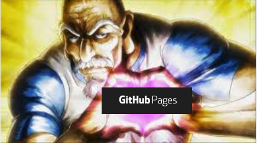

I told you not to click!!
Your Title or Tagline
Holy fuck github pages are so goated !!
Free, 1 minute to deploy cd/ci already there tons of plugins what you need more? Not sure why all repos out there don't have one instead of the 16 century readme.md
Things that are floating into my brain right now
Blog
Empty blog post to defeat my horror vacui, do not click it
What is this mess?
This is my mental sandbox environment - a dedicated space for dumping my thoughts, ideas, and ongoing projects into a (more or less) versioned test stream.